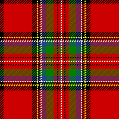
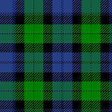

Tartan Hunt!
How to Play
Welcome to The Scottish Celebration and the Tartan Hunt game! By playing Tartan Hunt, you could win an 5-day, all-expenses-paid trip for two to Edinburgh courtesy of Loch Air.
Object of the game: Visit each of the sponsors' booths below and locate the tartan swatch shown. You'll be prompted to take a quick photo of the swatch. Once you've found all 12 tartans, go to booth C930 in Hall 5 to be entered in the drawing to win!
C340

Cailean Networks Design
Category: Data and Networking
Hall 4
- Cailean Networks Design
- Hall 4, Booth C340
- Ensuring that your online application and data is available to your customers and employees is key to the success of any business. Managing potential network or server overloads as well as having a fail over plan are essential in providing a responsive, satisfying and an always available online customer experience. Call us today for a free network health evaluation.
- I found it!
C120

Eilionoir Planning, Inc
Category: Urban Planning
Hall 3
- Eilionoir Planning, Inc
- Hall 3, Booth C120
- We are consultants, providing Development Planning and Design Services. We participate as Developers in land and building development projects.
- I found it!
C220

Keir Software Technologies
Category: Software Development
Hall 2
- Keir Software Technologies
- Hall 2, Booth C220
- Keir Software Technologies (KST) is a professional software development firm that wants to earn your business and become your partner. For over 35 years, KST has understood that our job is to listen to our client, understand their project and software requirements, and develop and deliver engineering solutions on time and on budget.
- I found it!
C460

Scotland United Financing
Category: Financial Services
Hall 4
- Scotland United Financing
- Hall 4, Booth C460
- Scotland United Financing is a leading local family owned consumer finance company founded in 1857, and operating 24 branches across Scotland. We offer consumer loans for autos, debt consolidation, and other borrowing needs.
- I found it!
C170

Tartan Attack!
Category: Software Development
Hall 4
- Tartan Attack!
- Hall 4, Booth C170
- Tartan Attack! was founded in 1995 by Kentigern Ridell. We are most known for its release of the legendary game Attack of the Killer Tartans.
- I found it!
C180

Laing Security Group
Category: Software Development
Hall 2
- Laing Security Group
- Hall 2, Booth C180
- Formed by recognized security industry leaders with proven track records, Laing Security Group, Inc. is an information security consulting and training company specializing in application security design. We offer strategic and technical advice targeted at risk management and compliance needs.
- I found it!
C420

Nasmyth Worldwide
Category: Software Development
Hall 3
- Nasmyth Worldwide
- Hall 3, Booth C420
- Nasmyth Worldwide (NW) is the premier independent integrator of enterprise security solutions. Founded in Edinburgh over 60 years ago, NW provides security expertise to premier organizations in our core markets of state and local government and healthcare.
- I found it!
C120
The Whole Haggis
Category: Food and Grocery
Hall 2
- The Whole Haggis
- Hall 2, Booth C120
- The Whole Haggis, or TWH as we are affectionately known, is one of the 75 largest grocery chains in the Scottland and is Scotland’s largest independent grocer.
- I found it!
C320
Greyfriar’s Barber
Category: Personal Care
Hall 1
- Greyfriar’s Barber
- Hall 1, Booth C320
- Keeping all of Edinburgh perfectly coiffed since 1872.
- I found it!
C350

Bagpipes R Us
Category: Musical Instrument Sales and Instruction
Hall 4
- Bagpipes R Us
- Hall 4, Booth C350
- Bagpipes ‘r’ Us has been in business since January 2004. We only sell instruments and reeds that I am willing to play or use with my students.
- I found it!
C240

Kingdom of Kilts
Category: Apparel
Hall 2
- Kingdom of Kilts
- Hall 2, Booth C240
- We sell the finest kilts in all of Scotland. Our kilts have been worn by celebrities, politicians and even inspired Jean Paul Gaultier’s famous 2001Scottish collection.
- I found it!
C140

Piping Hot Bagpipe Lessons
Category: Musical Instrument Sales and Instruction
Hall 3
- Piping Hot Bagpipe Lessons
- Hall 3, Booth C140
- The Bagpipes have been used for centuries to inspire warriors, welcome royalty, mourn the dearly departed, celebrate weddings, and bring distinction to virtually any other event. Learn from the finest instructors in all of Scotland. Beginners are welcome!.
- I found it!